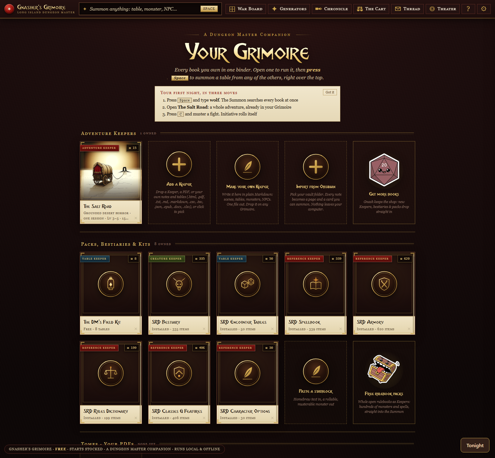
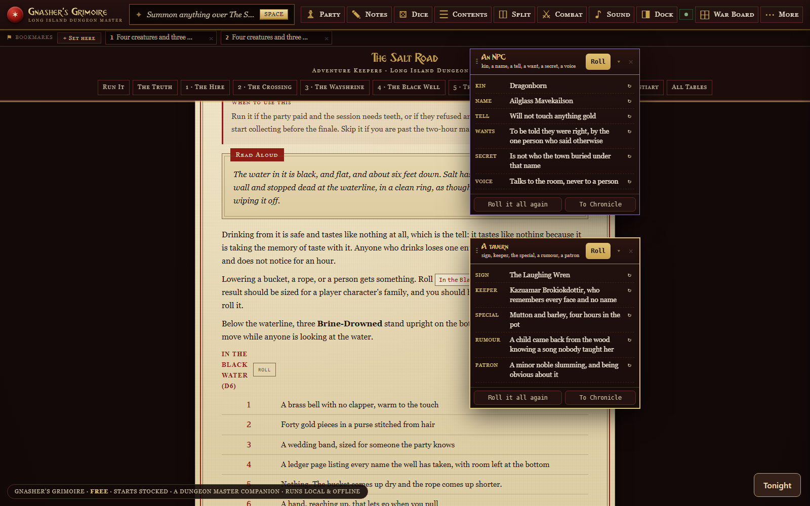
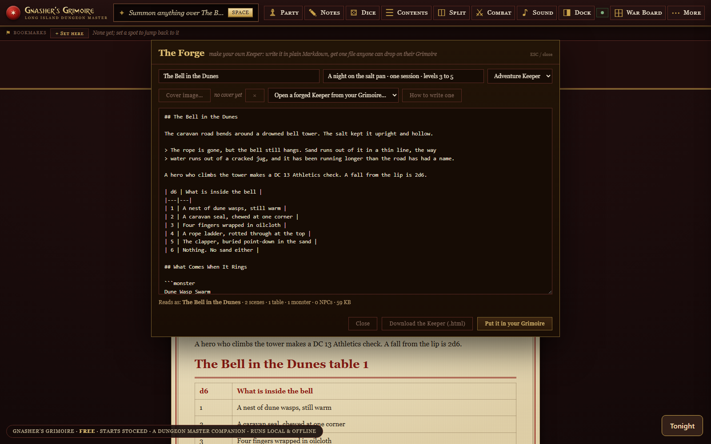
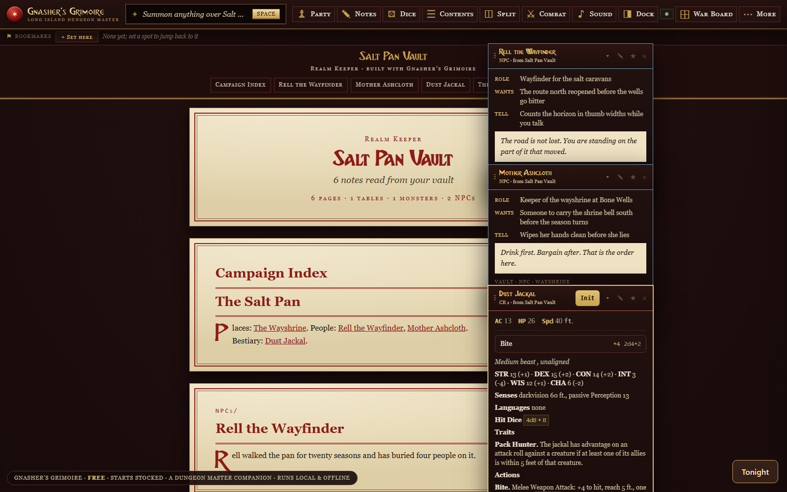
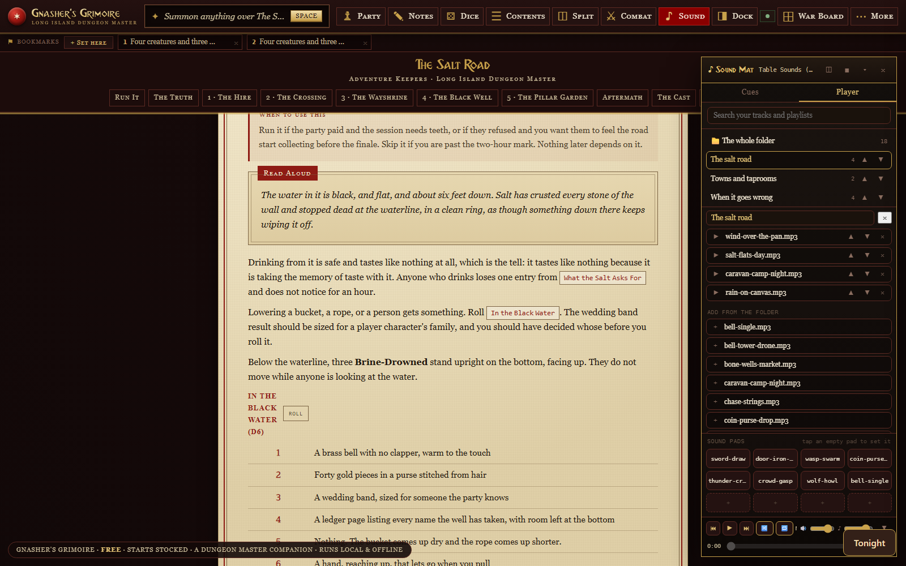
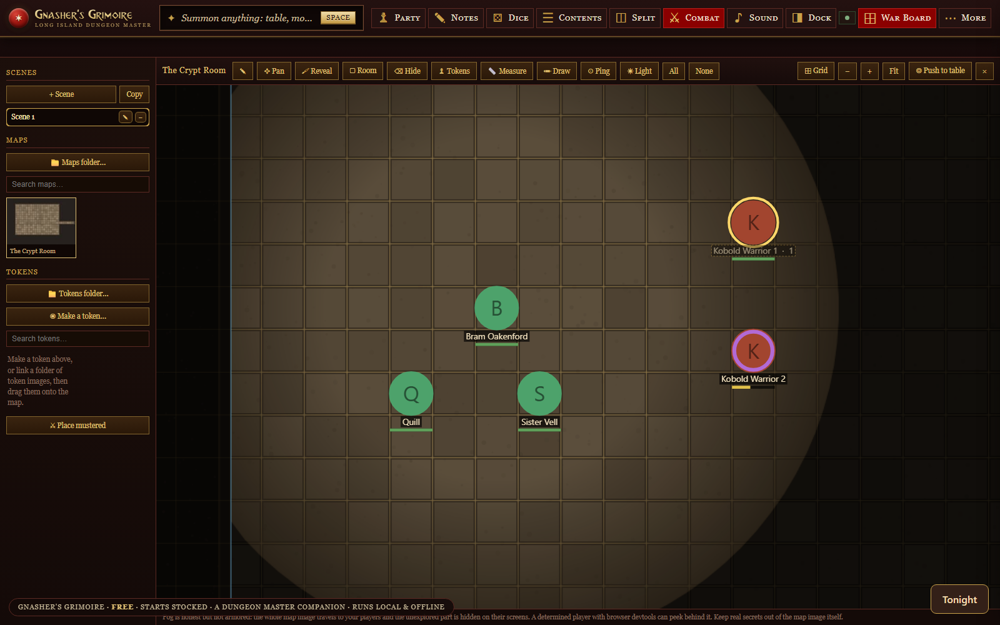

The Summon
A command line over your whole library. Hit Space, type three letters, and tables, monsters, NPCs and pages from every book you own come up at once. Pick one and it floats over the scene you are running.
A Dungeon Master Companion
One book that holds all your books. Every Adventure Keeper, every pack, every free table you own, gathered into a single binder that sits on top of the adventure you're running. Press a key, type three letters, and summon any table, monster, or NPC from your whole library right over the scene. Roll it in place. Never lose your page.
One file · opens in your browser · works offline forever · no account, no install · comes loaded with the full SRD 5.2.1: 335 monsters, 339 spells, 620 items, the rules
3.8.0 is out. Trace the walls of a room and they block sight, then light the map with a torch, a lantern, a light spell or open daylight, and every player token sees for itself. Punch your own tokens out of any picture, six borders drawn in the app. Five rollers cover the NPC, tavern, shop or loot you did not prepare. Your players get a shared pile they take from, give to and trade in without asking you. Still one file, still offline, still yours.
The live build, in motion. Space → type → the table floats over The Keeper of Halcyon Light → rolled in place. This is a recording of the real app.
A command line drops over whatever adventure you're running. Your scene stays exactly where it was.
"wol", "d100", a villain's name. It fuzzy-searches every book you own at once. Tables, monsters, NPCs.
The table lands on top of your scene. Roll it right there, read the result, move on. You never left your place.
Right now your adventures live scattered: a Keeper in your downloads, a free pack in your inbox, last week's one-shot in a folder you'll never find at the table. Gnasher's Grimoire is the slipcase that holds every one of them. Open the binder and it's all there: every table searchable, every monster one keystroke away, every NPC ready to speak.
Same instinct as the screen, everything you need in arm's reach, except the reach is three letters and a keypress, and it holds your entire library instead of four cardboard panels.
You're not buying a PDF you scroll.
You're buying a Keeper that drops into your Grimoire.
The moves you reach for mid-session, when you need something now and can't afford to lose the room.
A command line over your whole library. Hit Space, type three letters, and tables, monsters, NPCs and pages from every book you own come up at once. Pick one and it floats over the scene you are running.
Float as many cards as you want and drag them where you like. Collapse a big d100 down to its title bar. It still rolls collapsed. Everything saves to the exact adventure you opened it in.
Drop up to ten spots in a long adventure, auto-named from the scene you are on, so a bookmark you drop on the Gull’s Tooth battle map arrives already labelled. Click a chip and you are back there.
Muster a fight from your party and any monsters you own, then run initiative, HP and conditions without leaving the page. Attacks roll to-hit and damage into your log, a concentrating character who takes damage gets the DC, and a monster’s name plate hides from the players until they work out what it is.
Point it at your own folder of map images and run the fight on the map. Drop a grid on any picture or match the one it already has, pan and zoom, measure in squares and feet, draw on a layer your players never see, and ping a spot so every screen looks where you point. Press W.
Trace the walls of a room and they block sight, with a gap brush for doorways and arrow slits. Then light the map the way the fiction does: a candle, a torch, a hooded lantern, a light spell or open daylight, each with its own reach. Every player token sees for itself, so the party only uncovers what it could see from where it stands. Fog paints back by brush, rectangle or eraser.
Keep several scenes on one board and change rooms in the middle of a fight without losing a token or redrawing a wall. Drop text notes anywhere on the map, kept to yourself or shown to the table. Your players can draw on the board too, so the rogue can sketch the plan everybody argues about.
Drop in a picture, or paste one off your clipboard, and the app punches it into a round token: pan it, size it, pick one of six borders drawn in the app. Conditions ride as a ring around the art instead of dots over it, and a monster you rename in the fight carries the new name everywhere.
Read one code off the screen and your players link in with Gnasher’s Satchel. Muster a fight and initiative lights up every screen; push handouts and whispers; their rolls come home to your log. No server, no account.
A shared pile the whole table reaches into. Players take from it, give to it and trade with each other, and none of it waits on you. Beside it runs the Table Thread: post a note, reply to it, drop a dice chip into a message that the sheet’s owner rolls for real. Freeze the thread when the night ends and keep it.
Write an adventure in plain Markdown, right in the app, and get a Keeper out. A ## heading starts a scene, a quoted line becomes read-aloud text, a table written with pipes rolls, and a pasted 5e stat block becomes a monster you can muster. Keep it, or download one file anyone can drop into theirs.
Point it at your vault and every note becomes a page and a card you can summon. Fantasy Statblocks blocks become monsters, Initiative Tracker encounters become encounter cards, notes tagged npc become NPC cards, tables roll and [[links]] still link. With a vault linked, tonight’s Chronicle writes itself back into it as a note. It asks before it reads, and again before it writes.
Drag a downloaded Keeper onto the binder and it is in. So are the tables you already typed: .docx, .xlsx, .csv, .tsv and Markdown, with the die read off your own roll column. No file at all? Paste the cells. Your .txt and .md notes come in with the pictures you embedded, and any phrase inside them is searchable.
Shelve your own .pdf books beside your Keepers, open them in the app, and set page marks. The Summon reads the words inside, so a phrase from page 200 finds that page. .epub books come in chapter by chapter, each one summonable. Nothing is uploaded.
Put your music in a folder and play the night from the same screen: playlists, search, shuffle and loop as separate controls, and twelve one shot pads for doors, thunder and lockpicks. It sits beside the cue engine that plays a Sound Companion pack when an adventure calls for one.
For the question you did not prepare for: an NPC with a face, a manner and a want; names by culture; a tavern with a sign and a rumour; a shop with stock and prices; and loot. Reroll any single line until it fits, then drop the result into tonight’s Chronicle.
Retire any volume from its own cover, in three presses so it never happens by accident. The file on your computer is never touched and your notes and page marks stay put. Changed your mind? Restore the starting stock from About and every missing volume comes back, with nothing fetched from anywhere.
The pages read like a book on the desk: parchment, crimson rubrics and square rules, with the War Board and the fight screen staying dark where you want them dark. Six colour packs, and seven figure faces so HP, AC and roll results read clean from across the table.
Runs 100% offline, like the Keepers themselves. Your whole binder exports to one file you can back up or move, or you can link a folder on a drive and keep the binder in it: open the Grimoire on any computer, link the same folder, and your books, notes and saves are all there. No subscription to open what you already own.
Everything the Long Island Dungeon Master makes is a Keeper, a self-contained file built to drop straight into your binder. Some are here now; more are on the forge. Every one lands in the same Summon and the same War Table.
One Summon. One War Table. Your whole library, in reach. Free.
An Adventure Keeper isn't a file you skim. It's a playable adventure that loads into your binder and runs. A Creature Keeper isn't a stat-block PDF. Its monsters show up in the War Table, ready to fight. Own two Keepers and the Summon searches both. Own twenty and it searches twenty. The container is the value.
Whole open rulebooks, built as Keepers. Download one, drop it in your Grimoire, and every monster and spell in it is a keystroke away in the Summon, alongside everything else you own. No account, no sign-in, nothing phones home.
Which rules do they speak? The 2024 rules are built into the app already. Advanced 5th Edition and Black Flag arrive by pack, from the five above. Anything else that is 5e shaped comes in as your own file: .json in the 5eTools shape, a table in .docx, or a note in Markdown.
These are other people’s rulebooks, shared under the open licences their publishers chose, and each pack carries its own credit line inside it. We are not affiliated with any of these publishers. Your own books stay your own: the Grimoire reads a PDF you already have without ever uploading it.
Playing rather than running? The Player’s Satchel takes packs too, the same A5E feats and backgrounds, built so the character sheet actually uses them.
New · Run the fight in place
The hardest part of a combat is never the dice. It's keeping the whole board in your head while the table watches you stall. The War Table runs it for you, right on top of the adventure.
New · Connect the whole table
You run the night from the Grimoire. Your players carry Gnasher's Satchel, the free character app, on their phones, tablets, or laptops. Pair once and the two halves lock together, with no server and no account.
Gnasher's Grimoire is free, and it always will be. It's the binder, and a binder only matters once there's something in it. What you fill it with is up to you. Load it with free Table Keepers from The Hoard, then fill it with the Bi-Weekly One-Shots and Keepers when you want more teeth. Own more, summon more. That's the whole deal.
New free content lands all the time, on the Substack and the socials.
Find them on itch.io, with DriveThruRPG on the way.
No company, no investors, no ads, and nothing in the app calls home. It is one DM on Long Island, building the tool he wanted at his own table.
Two things keep it going. People buy Keepers, the adventures, tables and packs that drop into the binder. And people become Patrons, or donate.
Patron · $25, once. It unlocks nothing, because nothing is locked. The app is free today and it stays free, and there is no tier that opens a feature you already have on your disk. What it buys is art. Icons and covers get commissioned from artists, and this is what pays for them.
Screens from the live build. This is the app you're downloading.






Gnasher's Grimoire is one file. Download it, double-click it, and you're holding a stocked binder: the full SRD 5.2.1 reference (335 monsters, 339 spells, 620 items, the rules, free under CC-BY-4.0), the DM's Field Kit, and a sample Adventure Keeper, all pre-loaded. Summon the Tarrasque from your very first keypress. No account. No install. No internet after this page. Then join The Bi-Weekly One-Shot and there's a new Keeper to feed it every other week.
Download Gnasher's Grimoire, free Join The Bi-Weekly One-Shot, freeWant to see what drops into it? Meet the Adventure Keepers (the self-contained adventures the Grimoire is built to hold), or grab free tools from The Hoard. Running in person? Here is my list of the free tools worth having at a physical table.
The companion line: Gnasher's Grimoire™ (DM app) · Gnasher's Satchel™ (player app) · Gnasher's Quill™ (session recorder).
the Quill records → the Grimoire holds → the Satchel carries.
Something broken, confusing, or missing? grimoire@longislanddungeonmaster.com or the LIDM Discord. It goes to me, and bad news is the useful kind.